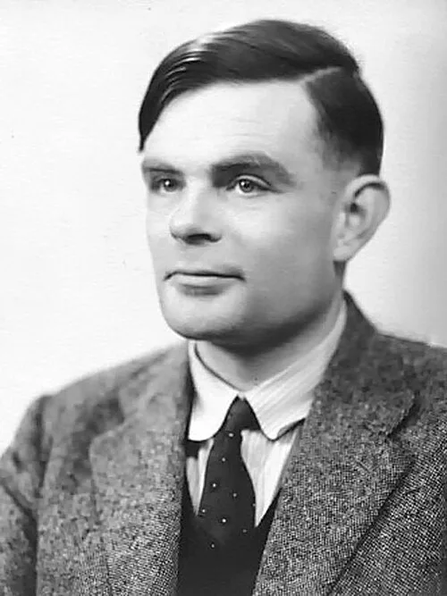

Искусственный интеллект в медицине
Как нейросети спасают жизни, ставят диагнозы и создают новые лекарства
точность диагностики рака
→ 1-2 года
на разработку лекарств
операций с роботами в 2025
времени на анализ снимков
Что такое ИИ в медицине?
Искусственный интеллект — это компьютерные системы, которые обучаются на огромных массивах медицинских данных: снимках МРТ, историях болезней, генетической информации. Они распознают патологии быстрее и точнее человека, помогают врачам принимать решения и даже проводят операции.

Основоположник искусственного интеллекта — Алан Тьюринг
Алан Тьюринг (1912–1954) — британский математик, логик и криптограф. В 1950 году он опубликовал статью «Вычислительные машины и разум», в которой предложил знаменитый «Тест Тьюринга» — эксперимент, проверяющий, может ли машина мыслить как человек. Идеи Тьюринга заложили фундамент для создания обучающихся программ и нейросетей, которые сегодня используются в медицине. Без его работ не было бы ни AlphaFold, ни ИИ-диагностов, ни роботов-хирургов.
Тест Тьюринга — критерий «человечности» машины.
Отец информатики — его работы легли в основу всех современных компьютеров.
Кроме Тьюринга, важный вклад внесли Джон Маккарти (ввёл термин «искусственный интеллект» в 1956 году), Марвин Минский (сооснователь лаборатории ИИ в MIT) и Аллен Ньюэлл с Гербертом Саймоном (разработчики первых логических программ).
📊 Где ИИ уже помогает врачам
| Область медицины | Что делает ИИ | Результат |
|---|---|---|
| Рентгенология | Анализ МРТ, КТ, рентгеновских снимков | Точность 94-96%, скорость 20 секунд |
| Онкология | Поиск опухолей на ранних стадиях | Находит метастазы размером 1-2 мм |
| Офтальмология | Анализ снимков сетчатки глаза | Выявляет диабетическую ретинопатию с точностью 97% |
| Кардиология | Анализ ЭКГ, выявление аритмий | Точность до 99% |
| Хирургия | Роботы-ассистенты при операциях | Точность до 0,1 мм, меньше травм |
Связь с нашей специальностью — информационной безопасностью
Медицинские данные — одна из самых ценных целей для хакеров. Атаки на ИИ-системы больниц могут исказить диагнозы или заблокировать доступ к данным пациентов. Наша задача — защищать эти системы, внедрять шифрование, двухфакторную аутентификацию и мониторинг угроз.